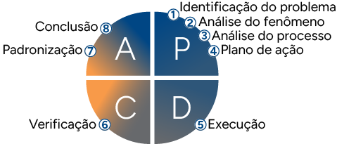
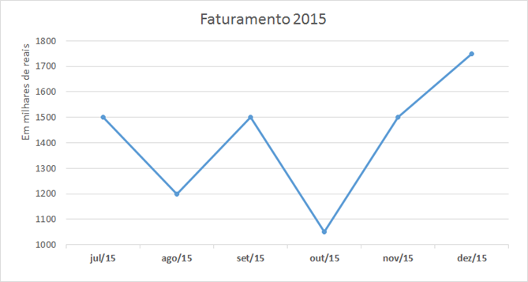
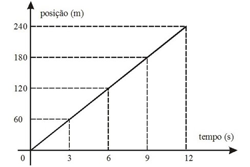
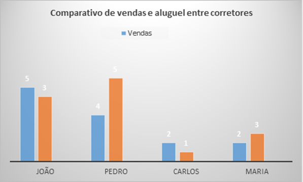
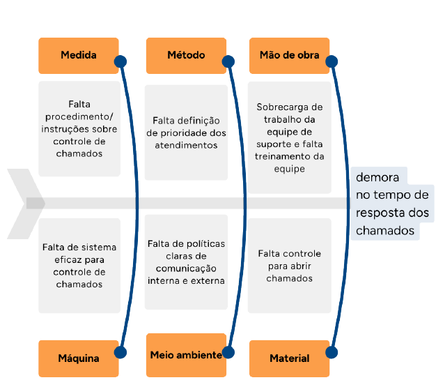

Planejamento estratégico: modelo básico e ferramentas básicas da qualidade
O planejamento estratégico é um processo essencial para definir os objetivos de longo prazo e desenvolver estratégias para alcançá-los de forma eficaz. Além do planejamento estratégico, as ferramentas da qualidade desempenham um papel fundamental para a excelência operacional e para a melhoria contínua dos processos.
O planejamento, ainda, é o estabelecimento dos objetivos e dos recursos, bem como das estratégias e dos planos de ação, hierarquizados, integrados e coordenados, de forma eficaz, para a sua efetivação. Apoia-se em processos de decisão, métodos e técnicas que permitem realizar as adequações necessárias à execução dele.
Logo, o planejamento trata das implicações futuras, das decisões presentes. Deve-se ter uma boa base de informações, a qual permita desenhar alternativas de cenários e de cursos de ações alternativas. Quanto mais longo o período de planejamento, mais relevante se torna a exigência desse requisito.
Modelo básico
A essência de um planejamento é a definição dos objetivos e das metas que atendam aos interesses da organização. Em outras palavras, são os resultados que a empresa deseja alcançar. Os objetivos variam de uma empresa para outra, mas, para iniciar o planejamento, deve-se levar em conta alguns objetivos básicos, para que se tenha sucesso em alguns resultados-chave, como:
Permanência no mercado
Inovação
Produtividade
Lucratividade
Desenvolvimento de pessoas
Atitudes de empregados
Responsabilidade pública ou social
A escolha dos objetivos da organização deve estar centrada em atividades que geram impactos nos resultados da organização e deve colaborar para otimizar os recursos, em busca das oportunidades disponíveis no ambiente externo, o mercado. No caso da empresa do ramo imobiliário, alguns objetivos podem ser elencados, entre eles:
Aumentar o faturamento em determinado bairro/cidade
Elevar o nível de produtividade dos corretores
Melhorar o nível de satisfação dos clientes
Crescer em termos de participação de mercado de determinado estado, entre outros
Os planos estratégicos impulsionam os esforços da organização para atingir seus objetivos.
Parte-se de uma análise dos ambientes internos e externos, então, são definidas a missão e as metas de longo prazo e são estabelecidas a estratégia e os planos de ação, determinando com antecedência como elas serão alcançadas.
As declarações estratégicas (missão, visão e princípios) são os fatores que legitimam a organização perante os investidores, os clientes, os fornecedores, a comunidade, o governo etc. Essas declarações deixam clara a finalidade da organização, no seu mercado de atuação.
Um plano estratégico estabelece a forma como as organizações alocarão seus recursos – capital, pessoal, instalações e tecnologias – para alcançar determinados objetivos, resultantes de uma profunda análise das condições internas e externas, que têm relação com a empresa.
As características de um plano estratégico são as seguintes:
Nível organizacional É um plano institucional que abrange a organização como um todo, o setor de atividades e o mercado de atuação.
Conteúdo É geral e sintético, de complexidade alta, em razão de analisar as variáveis internas e externas que impactam o negócio.
Tempo É de longo prazo.
Resultados Trata-se de uma declaração genérica que afirma o propósito básico da organização e o ramo dos negócios.
Responsabilidade pelo processo É da alta administração, dos assessores e dos consultores de planejamento.
É possível identificar três aspectos marcantes na técnica de planejamento estratégico:
Declarações estratégicas que definem o propósito da empresa
Análise ambiental em que serão avaliadas as reais condições da organização para realizar os objetivos/metas traçados
Formulação da estratégia, que, com base nas declarações estratégicas e na análise do ambiente e dos objetivos, deverá encontrar a melhor forma de organizar todos os seus recursos disponíveis para tentar alcançar vantagens competitivas, as quais diferenciam a empresa dos concorrentes e promovem níveis superiores de rentabilidade, em comparação com o encontrado no mercado
Lembre-se de que o profissional está em um meio muito competitivo, com outras empresas perseguindo objetivos bem semelhantes, portanto ter chances de sucesso dependerá muito da elaboração de um planejamento consistente, o que significa valorizar as variáveis a seguir:
Elaborar um planejamento com base em informações corretas
Realizar uma análise profunda das reais condições para sua execução
Conhecer com profundidade as forças que intervêm no mercado e que podem afetar profundamente os interesses da empresa
Procurar conhecer quem são os concorrentes atuais e com potencial para ingressar no mercado, bem como suas estratégias de atuação
Não se pode improvisar quando se fala em planejamento e execução, pois não se pode, a cada momento, alterar a escolha da estratégia.
Dentro das declarações estratégicas, o negócio traduz o âmbito de atuação ou o ramo de negócios em que a empresa pretende atuar. Portanto, deve-se procurar responder às seguintes questões:
Que produtos e serviços se pretende oferecer, para quais mercados e clientes?
Qual é o diferencial que se apresenta em relação aos concorrentes?
Qual é o benefício que o cliente experimenta ao adquirir o produto ou o serviço?
Na área da corretagem, essas questões são fundamentais para que se consiga atingir os resultados construídos pela empresa. A oferta de imóveis é muito alta, e o que fará a diferença na hora de o cliente determinar com qual empresa ou profissional fechará um negócio é a segurança no seu planejamento e a firmeza em relação aos objetivos da empresa.
A visão, a missão e os princípios também fazem parte do planejamento estratégico. Não é fácil determiná-los, mas, com estudo e conhecimento dos objetivos almejados pela empresa, fica muito mais fácil e prático de encontrá-los.
A explicitação da missão deve deixar claro quais são os públicos que têm interesse na empresa. Além de outros aspectos que contribuem para diferenciar uma organização de outras, os seguintes devem estar explícitos pela empresa:
O que a empresa faz?
Por que faz e para quem faz?
Que benefícios são propiciados em decorrência de sua atividade?
Uma boa definição de missão é uma referência para a gestão da empresa, na tomada de decisões, bem como um fator de coesão e de motivação para a atuação dos membros da organização, em razão da explicitação do propósito geral.
A visão procura esclarecer a investidores, clientes e fornecedores como desejaria ser vista daqui a alguns anos, isto é, um objetivo, um compromisso assumido pela empresa que precisa ser realizado ao longo de um período.
Já os princípios são os balizamentos para o processo decisório e comportamental da empresa no cumprimento de sua missão. É aqui que a empresa decide explicitar no que acredita, no seu credo, seus valores, sua política ou sua filosofia.
Assim, a visão é de extrema relevância para orientar os estabelecimentos dos objetivos e dos investimentos, assim como serve de inspiração e motivação para os membros da organização. A visão funciona como um desejo ou como um desafio estratégico a ser realizado.
Entre os temas abrangidos nessa declaração, estão:
Relacionamento com clientes
Ética
Qualidade
Inovação
Parcerias
Recursos humanos
Tecnologias
Sustentabilidade
Sigilo
A relação desses princípios dependerá da natureza do empreendimento e do setor de atuação, mas são exemplos facilmente aplicáveis no ramo imobiliário. Recomenda-se que sejam escolhidos os valores que mais expressam a filosofia da empresa. Além disso, eles devem ser explicitados de forma clara e concisa para facilitar a compreensão dos diversos públicos que se relacionam com a empresa.
Você pode fazer uma busca em sites de grandes empresas imobiliárias e ver como são a missão, a visão e os princípios de empresas. É um bom caminho para se buscar aplicabilidade prática desses conceitos trabalhados anteriormente.
Ferramentas básicas da qualidade
Analisar e propor melhorias é fundamental para a busca da qualidade. Nesse contexto, algumas ferramentas da qualidade podem ser empregadas para verificação e resolução de problemas.
As ferramentas básicas da qualidade são utilizadas para definir, medir, analisar e propor soluções aos problemas identificados, os quais interferem no desempenho dos processos organizacionais. Elas ajudam a estabelecer melhorias de qualidade na empresa. Conheça, a seguir, algumas delas.
Clique ou toque para visualizar o conteúdo.
PDCA
O ciclo PDCA é frequentemente utilizado como modelo para o planejamento e a implementação de soluções, de aprimoramento constante, em qualquer área. Também é usado como modelo genérico de processo de tomada de decisões administrativas. O nome PDCA indica as letras iniciais, em inglês, das ações principais do ciclo:
Clique ou toque para visualizar o conteúdo.
Refere-se à definição dos processos necessários, dos recursos, dos objetivos e dos controles para atender aos requisitos, fornecer garantia e satisfação aos clientes. O sucesso no planejamento requer a participação do empregado no processo de documentação.
Refere-se à implementação da mudança, conforme planejado. O sucesso da implementação requer comunicação e treinamento de todos envolvidos.
Refere-se a obter informação sobre o desempenho por meio do monitoramento e da medição de processos e produtos; é a observação dos resultados.
Refere-se à realização das ações para melhorar continuamente o desempenho dos processos. Isso pode ser alcançado por meio do uso da política da qualidade, dos objetivos da qualidade, dos resultados de auditoria, da análise de dados, das ações corretivas e preventivas e da análise crítica; corrigir, inclusive, se necessário.
Veja a representação do ciclo PDCA e as ações associadas a cada etapa:

Ciclo PDCA Fonte: Adaptado de Sousa (2015)
A imagem mostra um círculo dividido em quatro quadrantes coloridos que representam o ciclo PDCA: P (Planejar) em azul-escuro, com as etapas: 1. Identificação do problema, 2. Análise do fenômeno, 3. Análise do processo, 4. Plano de ação. D (Fazer) em azul-claro, com a etapa 5. Execução. C (Verificar) em amarelo, com a etapa 6. Verificação. A (Agir) em vermelho, com as etapas 7. Padronização e 8. Conclusão. As etapas são numeradas de 1 a 8, seguindo a ordem do ciclo.
Fluxograma
É uma ferramenta desenvolvida para desenhar o fluxo de processos, por meio de formas e pequenos detalhes, utilizando uma simbologia previamente convencionada.
Trata-se de uma representação visual do processo e permite identificar nele possíveis pontos nos quais podem ocorrer problemas.
As suas aplicações são muitas e o nível de detalhamento e sofisticação da simbologia pode variar em função de seus propósitos e usuários. Atualmente, o fluxograma tem sido utilizado em grande escala para estudo e análise de processos, com o objetivo de registrá-lo, analisar gargalos, limitadores e/ ou pontos de melhoria. Outra vantagem é a possibilidade de se fazer uma análise crítica do fluxo de informações, pois o fluxograma dá uma visão do todo.
Observe os principais símbolos usados no fluxograma:
Clique ou toque para visualizar o conteúdo.
Atividade
Refere-se a uma ação dentro de um processo.
Alternativa
É usada ao lado do símbolo de atividade sempre que um processo tenha outro caminho reconhecido.
Decisão
Utiliza-se sempre que houver uma decisão ou uma verificação dentro de um processo.
Dados
Representa uma entrada ou saída de dados.
Processo pré-definido
Representa a existência de uma atividade.
Armazenamento interno
É utilizado para representar um armazenamento físico de materiais ou componentes.
Documento
É utilizado para descrever quando é necessário gerar um documento.
Vários documentos
Utiliza-se para descrever uma série de documentos gerados em uma etapa.
Atraso
Demonstra os atrasos ocorridos durante o processo. É utilizado na formulação de um fluxograma que faz um diagnóstico de um processo.
Entrada manual de dados
Demonstra uma operação manual de registro de dados.
Operação manual
Demonstra uma atividade realizada diretamente por um colaborador.
Conector de página
É utilizado quando o fluxograma for extenso ou necessitar ficar separado ao longo de um processo.
Espera
É usado quando uma etapa do processo deve aguardar uma informação ou um processamento.
Os objetivos principais de um fluxograma são:
Padronizar a representação dos procedimentos
Trazer mais rapidez na descrição dos métodos
Facilitar a leitura e o entendimento
Facilitar a localização das informações e a identificação dos aspectos mais importantes a serem observados
Aumentar a flexibilidade
Melhorar o grau de análise do processo representado
Um fluxograma pode ser usado em diferentes situações. Veja alguns exemplos:
Criação de instruções de trabalho
Guia para atendimento ao cliente
Definição de procedimentos
Instruções relativas a planos de segurança
Fluxo de aprovação de projetos
Manuais de utilização de sistemas, máquinas e dispositivos
Plano de manutenção
Plano de treinamento
Gráficos
Os gráficos servem para analisar as tendências, as sequências e as comparações entre duas variáveis. Neles, visualizam-se dados numéricos, facilitando assim o entendimento dos números demonstrados nos gráficos.
Nos gráficos, empregam-se a representação do espaço, com seus pontos, seus planos e suas linhas e figuras geométricas. Como exemplo, pode-se trazer a economia, que faz o uso deles para representar modelos econômicos, de mercado e de produção, demonstrando o comportamento de preços, demanda e oferta de produtos. Já a sociologia os utiliza para ilustrar movimentos populacionais, desiquilíbrios sociais etc.
Na atuação imobiliária, os gráficos podem ser usados para representar as vendas de imóveis, em um determinado período (tempo). O gráfico é um mecanismo simples de utilização; basta coletar os dados a serem mostrados no gráfico e definir o tipo de gráfico que melhor representará as informações.
Os tipos de gráficos podem ser:
Clique nas setas para visualizar o conteúdo.

Gráfico de linha Fonte: Pós-Graduando (2016)
O gráfico de linha mostra o relacionamento entre dois eventos.
A imagem mostra um gráfico de linhas do "Faturamento 2015", com os meses de julho a dezembro no eixo horizontal e os valores em milhares de reais no eixo vertical. O faturamento começa em 1.500 reais em julho, cai para 1.300 em agosto, sobe em setembro, cai em outubro e volta a subir, atingindo o pico de 1.750 reais em dezembro.

Gráfico de tempo Fonte: Brainly (s. d.)
O gráfico apresentado mostra a relação entre a posição de um objeto e o tempo.
O gráfico de tempo mostra a variação de um evento ao longo de um período.

Gráfico de barra Fonte: Senac EAD (2024)
O gráfico compara vendas e aluguéis entre corretores. João fez 5 vendas e 3 aluguéis; Pedro, 4 vendas e 5 aluguéis; Carlos, 2 vendas e 1 aluguel; e Maria, 2 vendas e 3 aluguéis. As barras azuis indicam vendas e as laranjas, aluguéis.
O gráfico de barra mostra o relacionamento entre duas variáveis.
Gráfico de pizza Fonte: Senac EAD (2024)
O gráfico circular, também conhecido como gráfico de pizza, representa a relação entre as partes e o todo. Ele mostra o total, dividido em seções, em que cada parte é proporcional ao seu valor em relação ao conjunto, e a soma de todas as partes corresponde a 100%.
O gráfico circular ou de pizza mostra o relacionamento de cada uma das partes com o todo; apresenta o total, e suas partes devem somar 100%.
Diagrama de causa e efeito
É também chamado de diagrama de Ishikawa ou espinha de eixe, devido ao seu formato. Tem como objetivo representar graficamente e facilitar a identificação das causas de problemas, os quais devem ser sanados ou mesmo os fatores que levam a determinado resultado desejado.
As causas do problema são agrupadas em categorias pré-definidas. A grande vantagem do diagrama causa e efeito é que se pode atuar de modo mais específico e direcionado, no detalhamento das causas possíveis.
As causas levantadas são agrupadas nas categorias mais comumente utilizadas, porém isso pode mudar dependendo do tipo, do segmento e do contexto em que a empresa está inserida.

Diagrama de causa e efeito Fonte: Adaptado de Corrêa (2018)
Para que uma ação corretiva/preventiva obtenha sucesso, ela deve estar conectada à sua causa. Caso uma ação seja tomada sem a devida análise prévia de sua causa, é muito grande a chance de acontecerem reincidências e retrabalhos durante o andamento dos processos.
O diagrama de causa e efeito tem quatro etapas:
Discussão do assunto a ser analisado, contemplando seu processo, como ocorre, onde ocorre, áreas envolvidas e escopo (objetivo principal) (recomenda-se que se utilize o brainstorming para que apareça o número possível de causas nesse momento)
Descrição clara e objetiva do efeito (problema ou condição específica), no lado direito do diagrama
Levantamento das possíveis causas e seu agrupamento por categorias no diagrama
Análise do diagrama elaborado e coleta de dados para determinar a frequência de ocorrência das diferentes causas
As setas em cada grupo de causa correspondem a cada problema detectado.
Matriz GUT
Tem a finalidade de priorizar os problemas e, consequentemente, tratá-los, levando em conta gravidade, urgência e tendência. Essa ferramenta auxilia na formação de estratégias e gestão de projetos.
As iniciais GUT referem-se a três variáveis presentes na apresentação de um problema:
Clique ou toque para visualizar o conteúdo.
Refere-se à gravidade que o problema representa no contexto de uma determinada empresa em um momento específico, ou seja, a importância do problema examinado em relação a outros apresentados.
Refere-se à urgência em que a solução de um problema se faz necessária, ou seja, o quão importante é a ação temporal.
Indica o sentido da gravidade do problema, se ele tende a crescer ou a diminuir com a ação do tempo. Essa variável responde à seguinte questão: “Caso não se tome nenhuma ação sobre o problema, qual é a tendência de ele piorar o desempenho dos processos ou de permanecer inalterado com o passar do tempo?”, ou seja, caso não seja feito nada, a tendência do problema é piorar (nota mais perto de 5) ou permanecer inalterado (nota mais próxima de 1)?
Gravidade
Refere-se à gravidade que o problema representa no contexto de uma determinada empresa em um momento específico, ou seja, a importância do problema examinado em relação a outros apresentados.
Urgência
Refere-se à urgência em que a solução de um problema se faz necessária, ou seja, o quão importante é a ação temporal.
Tendência
Indica o sentido da gravidade do problema, se ele tende a crescer ou a diminuir com a ação do tempo. Essa variável responde à seguinte questão: “Caso não se tome nenhuma ação sobre o problema, qual é a tendência de ele piorar o desempenho dos processos ou de permanecer inalterado com o passar do tempo?”, ou seja, caso não seja feito nada, a tendência do problema é piorar (nota mais perto de 5) ou permanecer inalterado (nota mais próxima de 1)?
Normalmente, descrevem-se os problemas e ao lado atribui-se uma nota de 1 a 5 para cada variável (GUT). Após, multiplicam-se as três variáveis relativas a cada problema e analisa-se o valor. Quanto maior o valor, maior deve ser a prioridade com que essa questão deve ser resolvida. A matriz GUT é uma ferramenta que deve ser aplicada em grupo. Recomenda-se que o grupo tenha no máximo 15 pessoas e as notas devem ser atribuídas sob consenso dos participantes. Essa tabela agilizará a reunião e fornecerá um senso comum aos participantes.
A matriz GUT considera, além da gravidade do problema, da urgência na tomada de ações e da tendência delineada, o relacionamento entre os três fatores de análise, caracterizando, assim, a matriz, que se apresenta com a configuração (fatores e pesos de avaliação) conforme tabela a seguir:
Valor
Gravidade
Urgência
Tendência
GUT
5
Gravíssima
Ação imediata
Agravar rapidamente
125
4
Muito grave
Ação rápida
Agravar no curto prazo
64
3
Grave
Ação normal
Agravar no médio prazo
27
2
Pouco grave
Ação lenta
Agravar no longo prazo
8
1
Menor gravidade
Pode esperar
Acomodar
1
Matriz GUT Fonte: Senac EAD (2024)
Como você pôde ver, a matriz GUT estabelece pesos de acordo com o nível de importância de cada fator, permitindo que se possa dirigir ações para aqueles que mais impacto negativo terão na organização.
Os problemas em análise, necessariamente, não precisam estar relacionados. Assim, pode ser realizada a análise por meio de diversos setores da organização para uma tomada de decisão. Portanto, a matriz GUT permite um direcionamento adequado de recursos, fazendo com que a organização potencialize a solução a ser estabelecida.
5W2H
É a checagem de determinadas tarefas que precisam ser desenvolvidas com o máximo de clareza possível por parte dos colaboradores. Ela funciona como um mapeamento das tarefas, em que ficará estabelecido o que será feito, quem fará o que, qual tempo e todos os motivos pela qual essa tarefa deve ser feita. Assim, tem por objetivo elaborar planos de ação. Simples e útil, o 5W2H facilita a implementação das ações necessárias às mudanças e a boa performance.
Trata-se de um conjunto de perguntas que devem ser feitas no momento de elaborar um plano de ação. As iniciais W e H representam as iniciais dos seguintes termos de língua inglesa:
What?
O que será feito? Ação
Why?
Por que será feito? Justificativa
Where?
Onde será feito? Local
When?
Quando será feito? Prazo
Who?
Por quem será feito? Responsável
How?
Como será feito? Procedimento
How much?
Quanto custará fazer? Custos
O 5W2H é uma ferramenta que se encaixa em muitos contextos, mas não é usada para solucionar problemas nem para estimular a criação de novas estratégias. É uma ferramenta de gestão de informações.
Seis sigma
Seis sigma (ou 6S) pode ser definido como uma estratégia gerencial planejada, com foco nos resultados de qualidade e financeiros, com o objetivo de promover mudanças significativas nas organizações, buscando sempre melhorias nos processos, produtos e serviços oferecidos aos clientes.
De um modo geral, essa metodologia funciona e é utilizada para mudanças estratégicas, visto que se trata de uma busca incansável para atender a todas as necessidades dos clientes, associado ao poder de decisão da organização. Os dados e os fatos analisados tendem a buscar a melhoria dos processos, bem como o alinhamento de ações e a medição dos impactos que os processos possuem sobre a empresa.
O seis sigma é baseado em uma metodologia, a DMAIC, que foi inspirada no ciclo PDCA. A metodologia DMAIC é composta de cinco fases:
Clique ou toque para visualizar o conteúdo.
É importante definir metas claras para as atividades e as melhorias almejadas, e essas metas serão os novos objetivos estratégicos da empresa.
É preciso mensurar o sistema existente. Antes de propor as melhorias, é necessário entender 100% como acontece cada etapa dos processos internos da empresa. Com base nisso, é possível estabelecer métricas válidas e confiáveis para monitorar o progresso rumo às metas definidas.
O objetivo desta análise é identificar caminhos para eliminar a lacuna entre os números atuais e as novas metas definidas. Essa análise deve ser fundamentada por dados sólidos e uma análise estatística.
Com relação ao sistema, esta fase significa a melhoria do sistema, e não a realização de mudanças estruturais. Neste momento, conta muito a capacidade criativa para encontrar novas soluções e melhorar os processos.
Com relação ao novo sistema desenvolvido, o controle busca a garantia de que a metas alcançadas serão mantidas a longo prazo.
Com o conhecimento de todas essas ferramentas, é importante que o profissional corretor de imóveis disponha de tempo para organizar e planejar os rumos da sua imobiliária ou daquela que faz parte, bem como organizar sua carreira como profissional autônomo. É preciso conhecer a fundo a própria empresa, sua atuação, os concorrentes, seu produto, enfim, o setor imobiliário como um todo.
Com essa preocupação demonstrada com as estratégias e zelando pela qualidade dos serviços prestados pelos corretores de imóveis, o Conselho Federal de Corretores de Imóveis (COFECI) lançou o Programa de Qualidade Imobiliária (PQI), homologado por meio da Resolução COFECI nº 1.363/2015, na qual propõe o Cadastro Nacional de Qualidade Imobiliária (CNQI). Nesse cadastro, as imobiliárias podem aderir ao PQI, buscando contemplar um processo de melhoria contínua das ações profissionais ou empresariais do ramo imobiliário, incentivando integração e fortalecimento do mercado, bem como a sua valorização.
O mercado imobiliário é muito dinâmico, por isso o planejamento estratégico é tão importante. Lembre-se de que o planejamento não é fixo, podendo ser corrigido a qualquer tempo. Vale mais realizar um planejamento estratégico e fazer as suas devidas correções do que ser surpreendido por algum problema que poderia ter sido resolvido com uma análise prévia do negócio.
Ao implementar as ferramentas estudadas de forma sistemática, é possível potencializar as ações planejadas de forma a aumentar a satisfação do cliente, fortalecendo a posição competitiva do corretor no mercado imobiliário. A qualidade nos serviços imobiliários é tema fundamental para uma atuação bem-sucedida.